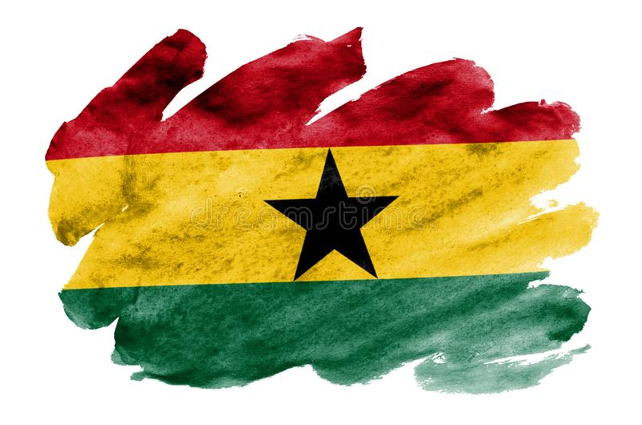

Discover the Ghanaian akan name attached to your birthday!

Akan names
The Akan people of Ghana frequently name their children after the day of the week they were born and the order in which they were born. These "day names" have further meanings concerning the soul and character of the person.
Most Ghanaians have at least one name from this system, even if they also have an English or Christian name. Notable figures with day names include Ghana's first president Kwame Nkrumah and former United Nations Secretary-General Kofi Annan.
Akan names vary depending on the day of birth. (M) is male and (F) is female:
Sunday: Kwasi(M), Akousua(F)
Monday: Kwadwo(M), Adwoa(F)
Tuesday: Kwabena(M), Abenaa(F)
Wednesday:Kwaku(M), Akua(F)
Thursday: Yaw(M), Yaa(F)
Friday: Kofi(M), Afua(F)
Saturday:Kwame(M), Ama(F)
The naming system of the Akan people is as distinct as that which elders in Togo (the Ewe people), the Ga people, Benin (the Fon people), and the African diaspora pass on to toddlers.
Other forms of traditional naming include middle names, which can refer to order of birth as part of the caste of siblings, twin status, or could be an inherited maiden name.
Aside the fact that day names are a simple means for commonality, they are easy conversation starters and icebreakers.The Akan people use the Kwa language group’s system of timekeeping, which is based on a six-day week (‘nnanson‘), with the seventh day inclusive.
The purpose of this website is to help you to find your akan name accoding to the information you provide
Simply complete the form below -asking for your birthday- and your akan name will be given to you, to the best of my abilities and knowledge.